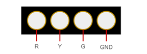
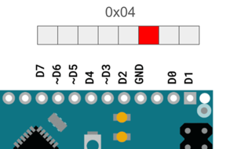
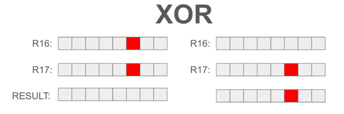
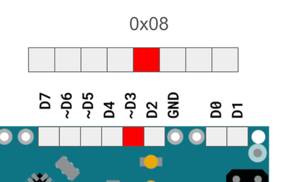
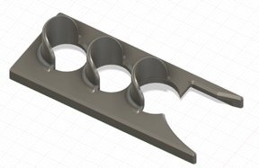
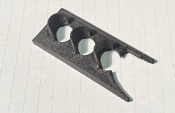

2025 · AVR Assembly
AVR Assembly Traffic Light
Programmed an ATmega328P in AVR assembly to control a traffic-light sequence using direct port manipulation, delay loops, and branching instructions.

Video Demonstration
Working demonstration
The project video shows the physical build, behaviour, and final result.
 ▶ Watch on YouTube
▶ Watch on YouTube
Project Overview
Control hardware at the register and instruction level.
The project required replacing Arduino-style abstraction with low-level assembly instructions, timing loops, and direct control of output pins.
What I built
- Assembly program for traffic-light sequencing
- Direct PORTD output control
- Software delay subroutine
- Looping green/yellow/red timing cycle
Technical Skills
Skills demonstrated
Assembly programming
Applied directly in the design, build, debugging, or final integration of the project.
Microcontroller registers
Applied directly in the design, build, debugging, or final integration of the project.
Timing loops
Applied directly in the design, build, debugging, or final integration of the project.
Bit operations
Applied directly in the design, build, debugging, or final integration of the project.
Low-level debugging
Applied directly in the design, build, debugging, or final integration of the project.
Build Story
AVR output states and enclosure design
Test hardware
The image to the right shows the 0x04 output mask on the AVR port, used to turn on the first LED output in the traffic-light sequence.

Output sequence
The image to the right shows the XOR operation used in the assembly code to toggle the advanced green LED state.

Port-output reference
The image to the right shows the 0x08 output mask on the AVR port, used for the next LED state in the sequence.

Wiring reference
The image to the right shows the CAD model for the traffic-light enclosure before printing.

Final prototype
The image to the right shows the printed traffic-light enclosure with the three LED openings.
